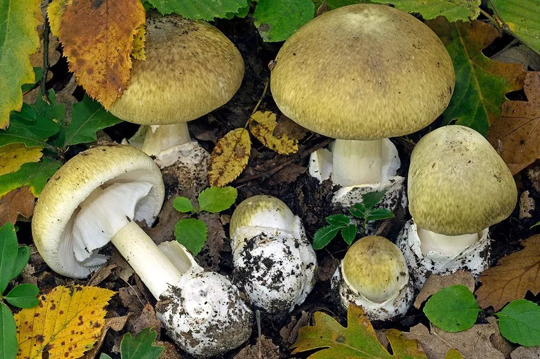

真菌 · 真菌界
毒鹅膏 Amanita phalloides

被称为“死帽蕈”的剧毒蘑菇，菌盖橄榄绿至黄褐色，含鹅膏毒肽，是全球毒蘑菇中毒死亡的头号元凶。
- 分类
- 门担子菌门纲伞菌纲目伞菌目科鹅膏科属鹅膏属
- 栖息环境
- 栎树、山毛榉等阔叶林的地面，夏秋季出菇
- 地理分布
- 欧洲、北美和东亚，中国部分地区有分布记录
- 保护级别
- 暂无评估（IUCN 未评估，有毒物种）
物种志
毒鹅膏是担子菌门伞菌目的剧毒真菌，子实体单生或群生。菌盖呈橄榄绿色、黄绿色至黄褐色，半球形至平展，直径 5–15 cm，表面光滑，有时带白色斑块；菌褶白色，离生；菌柄白色，基部膨大并有白色菌托；菌环白色膜质，位于菌柄上部；孢子印白色。它的颜色和形态变化较大，容易与可食菌混淆。
毒鹅膏多生于栎树、山毛榉等阔叶林的地面，夏秋季出菇，在欧洲、北美和东亚都有分布，中国部分地区也有记录。它含有鹅膏毒肽和鬼笔毒肽，会破坏肝脏和肾脏，误食后潜伏期长、病情凶险，是全球毒蘑菇中毒死亡的头号元凶。目前没有特效解毒药，主要靠血液净化和支持治疗。预防的关键是不采、不买、不吃不认识的野生菌，尤其不要相信“颜色鲜艳才有毒”的错误说法。
形态与习性
- 菌盖橄榄绿至黄褐色，直径 5–15 cm
- 菌褶白色，离生
- 菌柄白色，基部膨大并有白色菌托
- 菌环白色膜质，位于菌柄上部
- 毒性含鹅膏毒肽和鬼笔毒肽，破坏肝肾
- 中毒后果潜伏期长、病情凶险，无特效解毒药
- 出菇期夏秋季
趣味知识
- 毒鹅膏被称为“死帽蕈”，是全球毒蘑菇中毒死亡的头号元凶。
- 它的菌盖呈橄榄绿色，颜色会随环境变化。
- “颜色鲜艳才有毒”是错误说法，毒鹅膏颜色并不鲜艳。
- 误食后潜伏期长，病情凶险，没有特效解毒药。